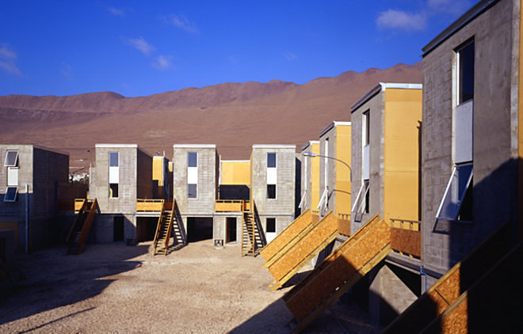
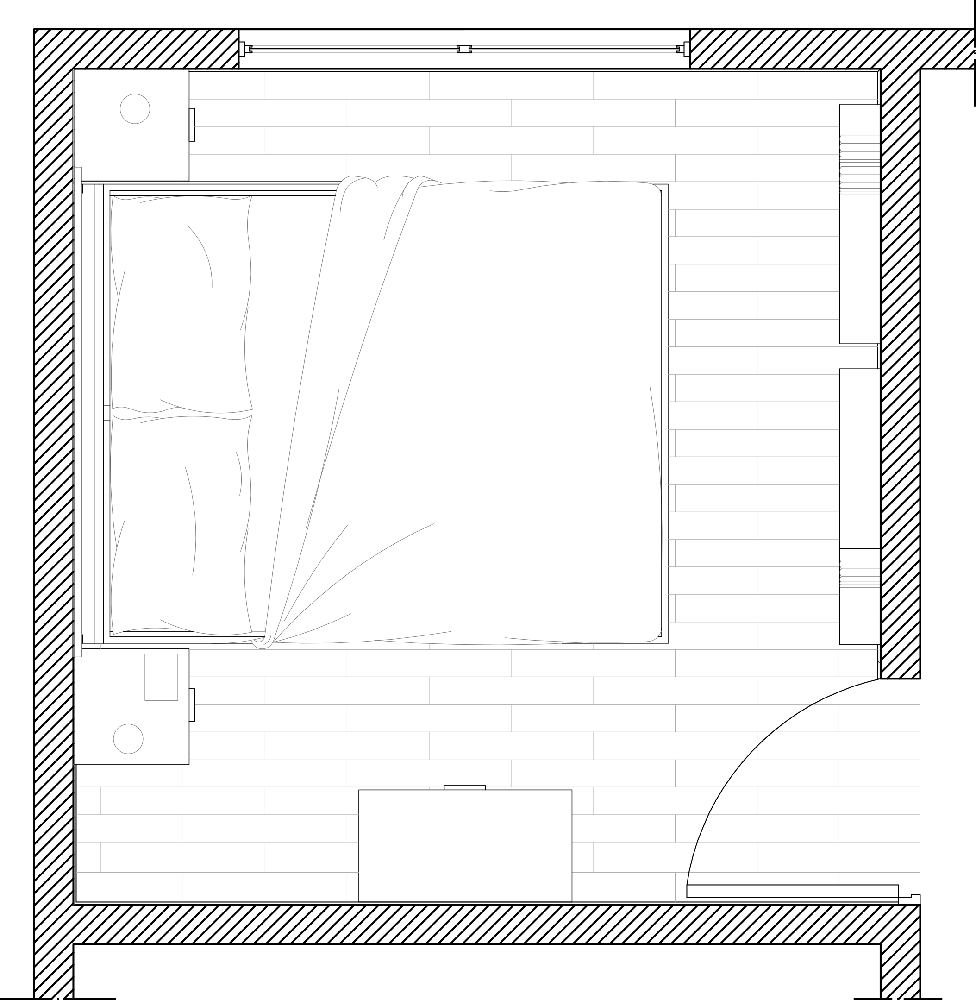
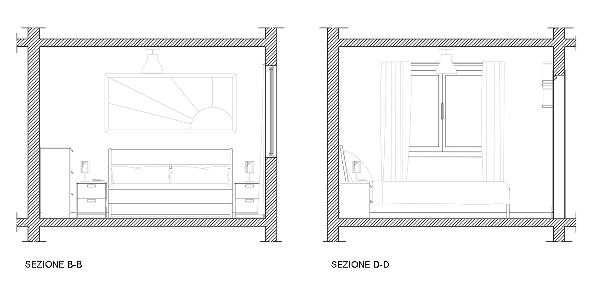

Il progetto di ampliamento di Quinta Monroy è solo uno dei lavori di Alejandro Aravena. Questo prevede la realizzazione di case seguendo un modello insediativo diverso dall’attuale proliferazione orizzontale della città sudamericana, declinata dalla favela sino al suburbio di classe alta, mantenendo la comunità nel sito originale, nonostante l’elevato valore immobiliare dell’area, vicina al centro di Iquique: i legami affettivi e lavorativi venivano così mantenuti, favorendo l’uso di uno spazio collettivo comune e condizioni di vita ricche ed articolate. Il progetto di ogni elemento e del loro assemblaggio è studiato per essere economico e di facile manutenzione. Questo progetto si divide in diversi ambienti che rispecchiavano le molteplici realtà familiari : dalla semplice coppia, alla famiglia numerosa. Quinta Monroy Simplex è stata pensata per un nucleo familiare comprendente due persone. Nel particolare il disegno in basso mostra la realizzazione della camera padronale. Questa è caratterizzata da uno spazio ridotto ma molto luminoso grazie alla finestra che affaccia sul giardino. Al suo interno il letto matrimoniale con due comodini posti ai lati. Di fronte al letto quattro pensili, utili e poco ingombranti, ottimi per il poco spazio che offre la stanza. Sulla parete che dà verso l'interno vi è la cassettiera ampia per consentire un organizzazione efficiente dello spazio.
CAMERA DA LETTO - disegni tecnici

PIANTA

L'arredo utilizzato comprende prevalentemente prodotti Ikea ottimi per il concept con cui sono stati pensati, molto vicino all'idea progettuale del complesso abitativo di Elemental
letto TRYSIL in legno di betulla rivestito in resina
cassettiera della serie BRIMNES a tre cassetti laccata bianco opaco
comodino ASKVOLL bianco e marrone-nero
armadio ASKVOLL bianco e marrone-nero
DESCRIZIONE ARREDO

ASKVOLL 022.708.17
PROVA
tttttttt
PROVA
Favourite photos


PROVA